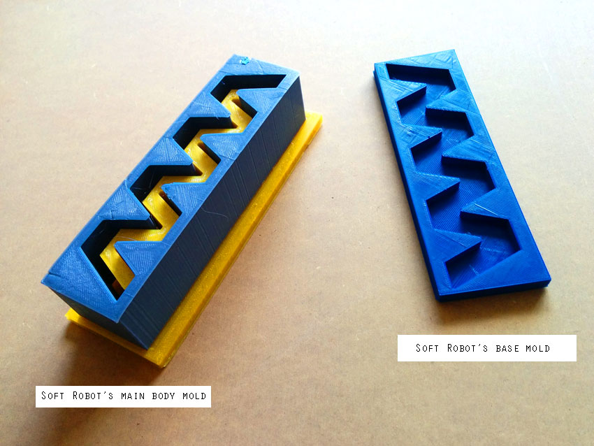
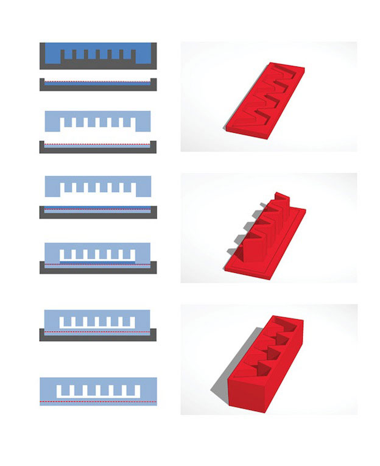
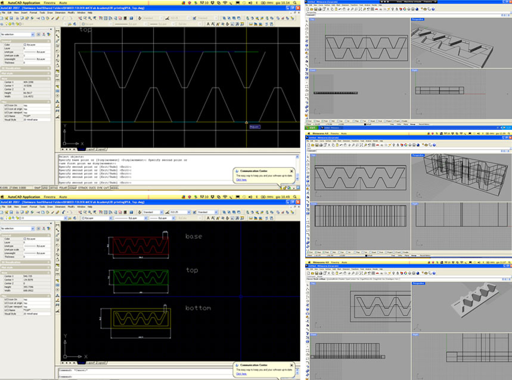
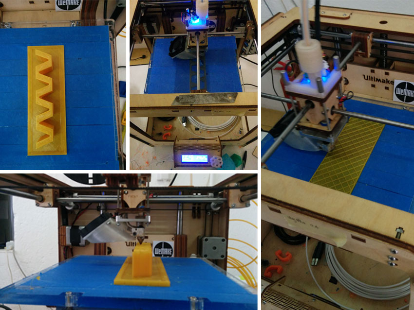
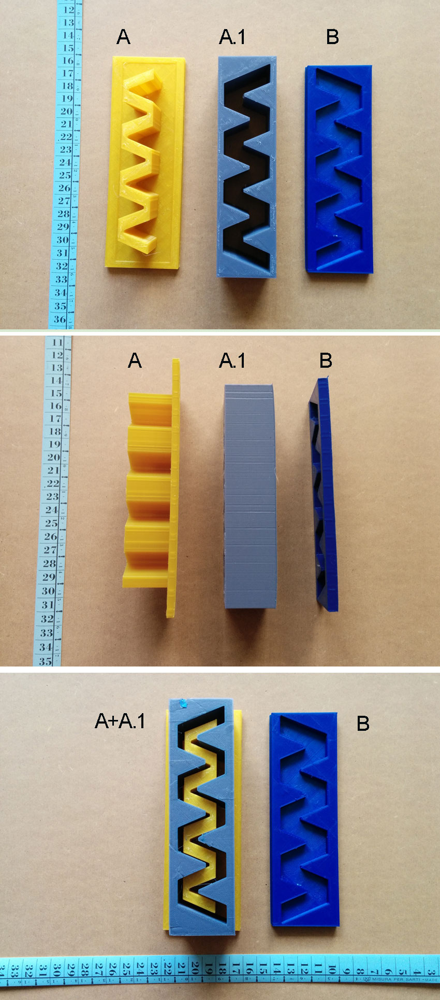
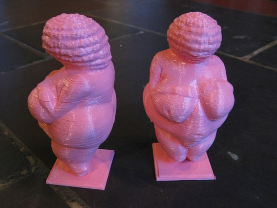
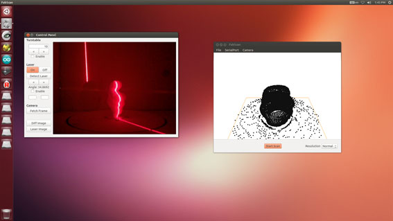
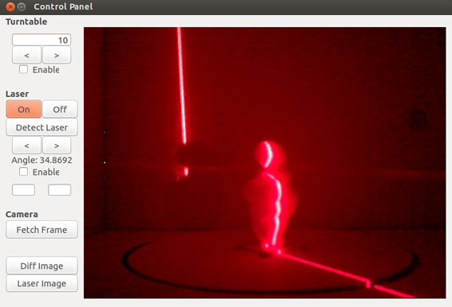
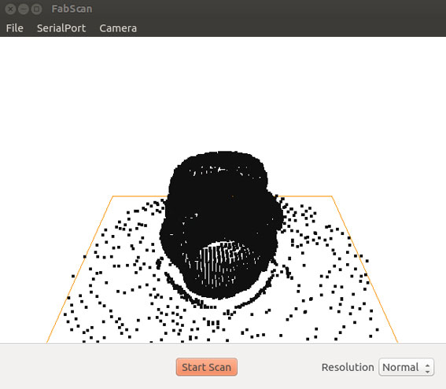

3D Printing Module
3D printed mold for PneuNets Extending Actuator (PEA)

I am interested in Soft Robotics and to start learning the logic behind this topic, I modeled and 3D printed a first simple mold for a soft robot actuator following and amazing tutorial I found here. Specifically, I started with a PentNeuts bending actuator, which nature, logics and function is explained below.
PneuNets Bending Actuators PneuNets (pneumatic networks) are a class of soft actuator originally developed by the Whitesides Research Group at Harvard. They are made up of a series of channels and chambers inside an elastomer. These channels inflate when pressurized, creating motion. The nature of this motion is controlled by modifying the geometry of the embedded chambers and the material properties of their walls. When a PneuNets actuator is pressurized, expansion occurs in the most compliant (least stiff) regions. For example, if the PneuNet is composed of a single, homogenous elastomer, most expansion will occur at the thinnest structures. Designers can pre-program the behavior of the actuator by selecting wall thicknesses that will result in a desired type of motion.And this is the video that explain the final behaviour of the PneuNets Bending Actuator I am going to make.
PEA Design Phase
Watching the video and the related tutorial, I started designging the molds in order to make them working as in this scheme to cast soft robots:

Once established precise measurements of the 3 mold subparts, I designed them using a 2D CAD software (I use Autocad) and once done, I opened the 2D dwg file in Rhinoceros for exstrusion and .stl (3d printer compliant format) export.

Once finish to model the actuator parts in Rhino, it is important to check the model in order to convert the NURBS in meshes and only then to export them in .stl format. I found helpful this wiki and executed the steps that the tutorial suggests. It has perfectly worked.
Before sending the files to the 3D printer, I checked the model in
NetFabb basic
The 3D models opened in NetFabb should look in this way:

I set the Ultimaker 3D printer and finally printed out the 3 molds. The overall printing process took 9 hours.


3D scanning
Fab Scan

I didn't performed yet the 3D scanning module in a succesful way. I tried to use the FabScan 3d scanner for this assignment but I have several issues with the scanning and exporting phase. I can document a little bit of my process but I need to make it again in order to understand and solve the issues I had.
FabScan is an open-source, do-it-yourself 3D laser scanner.
It started out as a Bachelor's thesis by Francis Engelmann, supervised by René Bohne.
In 2014, development was taken over by René Bohne and Mario Lukas.
The current FabScan100 Software uses qt and most people are having problems with it. I downloaded the FabScan Ubuntu Live DVD. I runned Ubuntu LiveDVD with preinstalled the FabScan software. The whole software options are donwloadable here

I decided to try scanning a 3D printed Willendorf Venus, and choosed for a color contrasting with the color of the scanner room, that is light brown (plywood).
I partially followed this tutorial that unfortunately is not fully understandable because is in german. Paying attention to cover the opening of the FabScan that lets too much light get in and uncovered doesn't allow to scan anything, I made dark the scanning environment. I then opened the point cloud panel and the control panel of FabScan software.

On one panel I could control the scanner turntable and on the other one I could control the point cloud growth.


Once scanning proces was finished, I tried to export the .stl file and the .PCD file (point cloud file) but the result was unsuccesful. The point cloud wasn't exported at all and I couldn't test it in NetFab to generate the meshes. The .stl file seems unusable as well. Below the .stl file is in any case donwloadable.